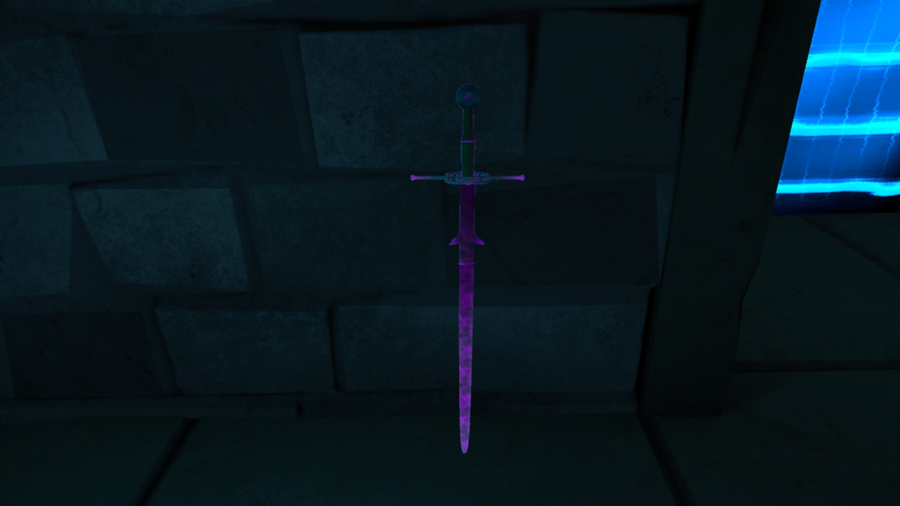
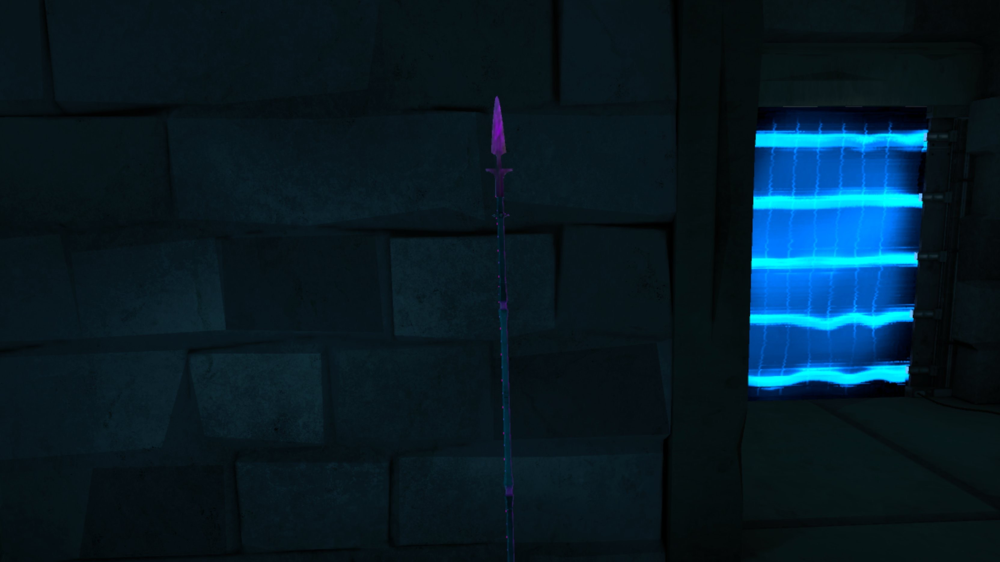
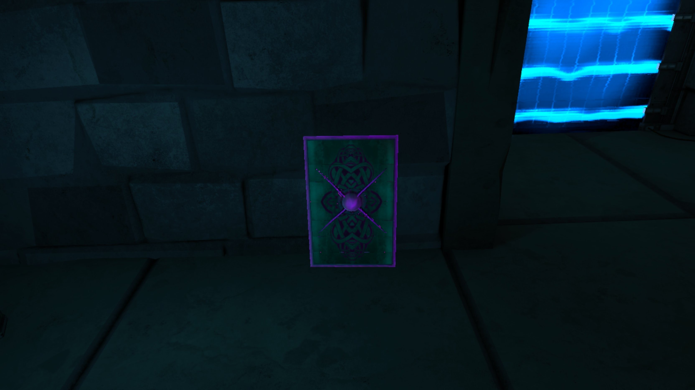

====Melee====
The melee class covers the back weapons: longsword, lance, and shield. This might get long, so here's a tldr, I wont be mad if you click it... I'm not reading all that.
- longsword
- The longsword is a longer sword that you can hold in both hands to deal more damage when you swing while also giving you the ability to launch foes away from you. Yeahh, this kinda sucks, but it was worse.
- Spear
- The spear is a weapon capable of being swung or thrown at enemies with more damage being dealt when holding the weapon with both hands. The spear has the ability to pierce enemies not wearing armor which can ragdoll them making follow-ups easy, and also being a spear makes it harder for melee enemies to get close enough to hit you...in theory anyway. The spear is probably the best melee weapon for your back as of my writing this.
- Shield
- The shield is unique in that it is not your main damage dealer and instead is SUPPOSED to block attacks and send enemies flying with bashes, but usually most attacks worth blocking either go throught the shield or they hit the top or bottom of the shield making it bounce off the shield and into your previously protected face. All things considered though if used as an offensive tool instead of a defensive one, the shield isn't too bad.



Summary
Longswords are good for knocking enemies back if kept in both hands. Spears are great for swinging, throwing, and jabbing. Shields suck, if you want to knock enemies away, use longsword.